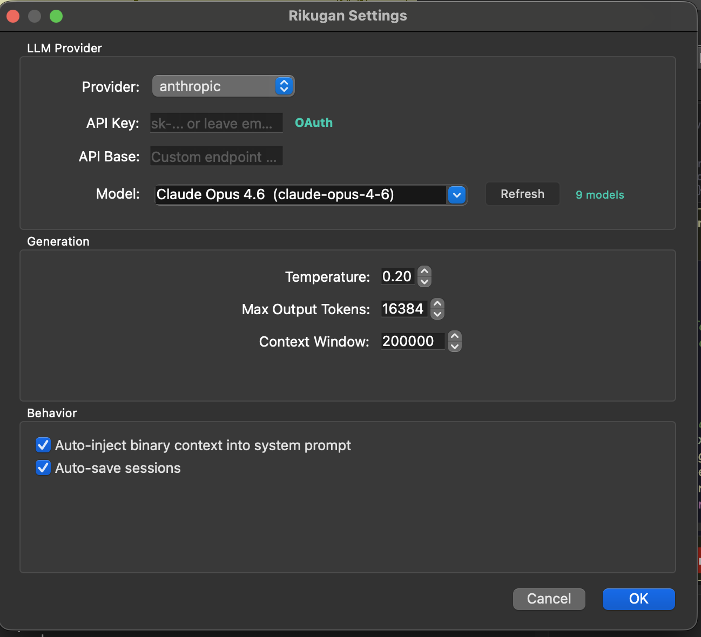
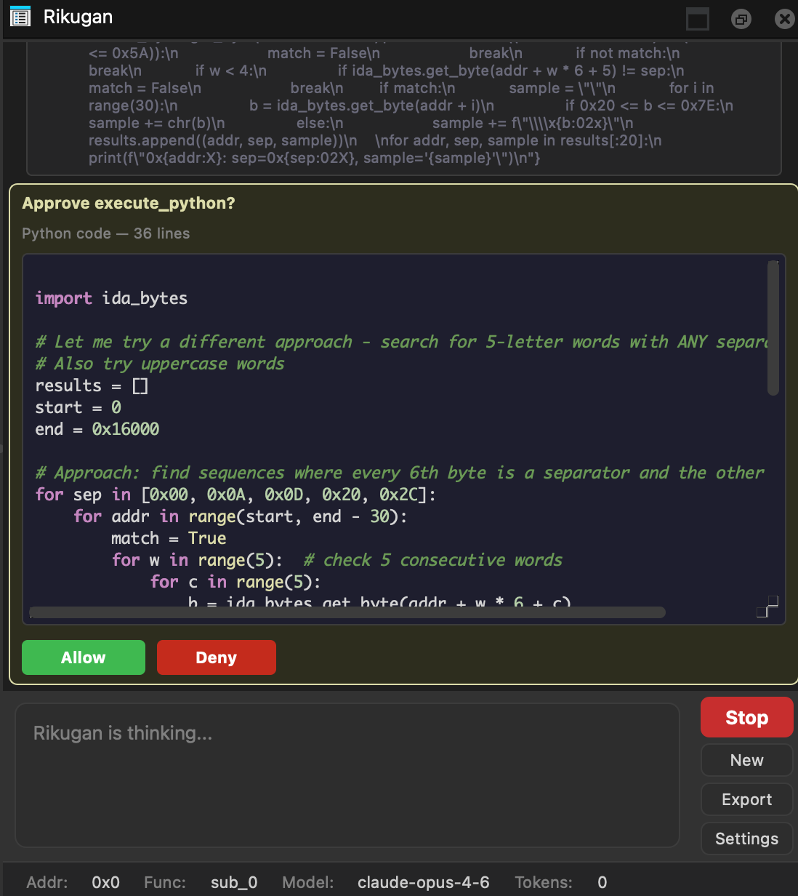

Documentation 六眼
Everything you need to install, configure, and use Rikugan — the AI reverse-engineering agent for IDA Pro and Binary Ninja.
Requirements
- IDA Pro 9.0+ with Hex-Rays decompiler (recommended), or Binary Ninja (UI mode)
- Python 3.9+
- At least one LLM provider API key (or Ollama for local inference)
- Windows, macOS, or Linux
Installation
Clone the repository, then run the appropriate installer for your target host.
Clone the repository
git clone https://github.com/buzzer-re/rikugan.git
cd rikuganRun the installer
./install_ida.shOptional: pass a custom user dir path
./install_ida.sh /path/to/ida/user/dirinstall_ida.batOptional: pass a custom user dir path
install_ida.bat "C:\Users\you\AppData\Roaming\Hex-Rays\IDA Pro"./install_binaryninja.shOptional: pass a custom user dir path
./install_binaryninja.sh /path/to/binaryninja/user/dirinstall_binaryninja.batOptional: pass a custom user dir path
install_binaryninja.bat "C:\Users\you\AppData\Roaming\Binary Ninja"Installers auto-detect the user directory for their host. They create plugin links/junctions, install Python dependencies, and initialize the Rikugan config directory.
Set your API key
Open Rikugan in your disassembler, click Settings, and paste your API key for your preferred provider.

claude setup-token.Configuration
Rikugan stores its configuration per host:
| Host | Platform | Config Path |
|---|---|---|
| IDA Pro | Linux / macOS | ~/.idapro/rikugan/config.json |
| IDA Pro | Windows | %APPDATA%\Hex-Rays\IDA Pro\rikugan\config.json |
| Binary Ninja | Linux | ~/.binaryninja/rikugan/config.json |
| Binary Ninja | macOS | ~/Library/Application Support/Binary Ninja/rikugan/config.json |
| Binary Ninja | Windows | %APPDATA%\Binary Ninja\rikugan\config.json |
You can edit this JSON file directly, or use the Settings dialog in the UI.
Config Structure
{
"provider": {
"name": "anthropic",
"model": "claude-sonnet-4-20250514",
"api_key": "sk-...",
"api_base": ""
},
"max_tokens": 4096,
"temperature": 0.3,
"context_window": 128000,
"checkpoint_auto_save": true,
"max_tool_result_chars": 8000
}| Key | Type | Description |
|---|---|---|
provider.name | string | Provider name: anthropic, openai, gemini, ollama, openai_compat |
provider.model | string | Model ID (e.g., claude-sonnet-4-20250514, gpt-4o) |
provider.api_key | string | API key for the provider |
provider.api_base | string | Custom API base URL (for openai_compat or Ollama) |
max_tokens | int | Max output tokens per response (default 4096) |
temperature | float | Sampling temperature (default 0.3) |
context_window | int | Max context window size in tokens (default 128000) |
checkpoint_auto_save | bool | Auto-save sessions after each turn (default true) |
max_tool_result_chars | int | Truncate tool results beyond this limit (default 8000) |
Opening the Panel
| Host | How to Open |
|---|---|
| IDA Pro | Press Ctrl+Shift+I, or Edit → Plugins → Rikugan |
| Binary Ninja | Tools → Rikugan → Open Panel, or use the sidebar icon |
Chat & Multi-Tab
Each tab is an independent conversation with its own message history and context.
- New tab: Click the
+button - Close tab: Click the × on the tab
- Fork session: Right-click a tab → "Fork Session" to create a copy at the current point
- Persistence: Tabs are tied to the current file. Opening a different database starts fresh tabs; returning restores saved conversations.

Quick Actions
IDA Pro exposes these in right-click context menus. Binary Ninja has equivalent commands under Tools → Rikugan.
| Action | Description |
|---|---|
| Send to Rikugan | Pre-fills input with current selection (Ctrl+Shift+A in IDA) |
| Explain this | Auto-explains the current function |
| Rename with Rikugan | Analyzes usage patterns and renames with evidence |
| Deobfuscate | Systematic deobfuscation of the current function |
| Find vulnerabilities | Security audit of the current function |
| Suggest types | Infers types from usage patterns |
| Annotate function | Adds inline comments to decompiled code |
| Clean microcode / IL | Identifies and NOPs junk instructions |
| Xref analysis | Deep cross-reference tracing |
Skills
Skills are reusable analysis workflows. Type / in the input area to see available skills with autocomplete.
| Skill | Description |
|---|---|
/malware-analysis | Windows PE malware — kill chain, IOC extraction, MITRE ATT&CK mapping |
/linux-malware | ELF malware — packing, persistence, IOC extraction |
/deobfuscation | String decryption, CFF removal, opaque predicates, MBA simplification |
/vuln-audit | Buffer overflows, format strings, integer issues, memory safety |
/driver-analysis | Windows kernel drivers — DriverEntry, dispatch table, IOCTL handlers |
/ctf | Capture-the-flag challenges — find the flag efficiently |
/generic-re | General-purpose binary understanding |
/ida-scripting | IDAPython API reference for writing scripts |
/binja-scripting | Binary Ninja Python API reference |
/modify | Autonomous 4-phase binary modification (exploration mode) |
/smart-patch-ida | IDA-specific binary patching |
/smart-patch-binja | Binary Ninja-specific binary patching |
Commands
| Command | Description |
|---|---|
/plan <msg> | Generate a multi-step plan, get approval, then execute step-by-step |
/modify <msg> | Enter 4-phase exploration mode: EXPLORE → PLAN → EXECUTE → SAVE |
/explore <msg> | Read-only autonomous analysis (explore phase only) |
/memory | Show current RIKUGAN.md persistent memory contents |
/undo [N] | Undo the last N mutations (default 1) |
/mcp | Show MCP server health status |
/doctor | Diagnose provider, API key, tools, skills, and config issues |
Exploration Mode
Exploration mode is a 4-phase autonomous agent flow for binary modification. The agent explores, plans, patches, and saves — with user approval at every gate.
How to use
/modify Change the score constant from 100 to 999Phases
- EXPLORE — The agent investigates the binary using all analysis tools. It accumulates findings in a KnowledgeBase (functions, hypotheses, data structures). Runs as a subagent with isolated context.
- PLAN — The agent synthesizes findings into a numbered modification plan with target addresses, current/proposed behavior, and patch strategy. You must approve the plan.
- EXECUTE — The agent applies patches in-memory for each planned change using the platform-specific smart-patch skill. Each patch is verified via decompilation.
- SAVE — You see a summary of all patches (count, bytes modified, verification status). Choose "Save All" to persist or "Discard All" to roll back.
/explore <msg> runs only the EXPLORE phase in read-only mode — no patching, no plan. Useful for pure analysis.Plan Mode
Plan mode is a simpler two-step workflow: plan first, then execute.
/plan Rename all functions in the crypto module with meaningful names- The agent generates a numbered plan
- You approve or reject the plan
- The agent executes each step with progress tracking
Mutation & Undo
Every mutating tool call (renames, comments, type changes, prototypes) is automatically recorded with a reverse operation. The Mutation Log panel shows the history.
/undo # undo last mutation
/undo 5 # undo last 5 mutationsSupported reverse operations: rename_function, rename_variable, set_comment, set_function_comment, rename_data, set_function_prototype, retype_variable. execute_python calls are marked as non-reversible.
Script Approval
The execute_python tool always asks permission before running. You see the full Python code with syntax highlighting in a scrollable preview, and can Allow or Deny each execution.

MCP Servers
Connect external MCP servers to extend Rikugan with additional tools. Create the config file:
| Host | Platform | MCP Config Path |
|---|---|---|
| IDA Pro | Linux / macOS | ~/.idapro/rikugan/mcp.json |
| IDA Pro | Windows | %APPDATA%\Hex-Rays\IDA Pro\rikugan\mcp.json |
| Binary Ninja | Linux | ~/.binaryninja/rikugan/mcp.json |
| Binary Ninja | macOS | ~/Library/Application Support/Binary Ninja/rikugan/mcp.json |
| Binary Ninja | Windows | %APPDATA%\Binary Ninja\rikugan\mcp.json |
{
"mcpServers": {
"my-server": {
"command": "python",
"args": ["-m", "my_mcp_server"],
"env": {},
"enabled": true
}
}
}MCP servers are started when the plugin loads. Their tools appear with the prefix mcp_<server>_<tool>. Set "enabled": false to keep a server configured without starting it.
Use /mcp in the chat to check server health status.
Custom Skills
Create custom skills in your user directory:
# IDA Pro
~/.idapro/rikugan/skills/ # Linux / macOS
%APPDATA%\Hex-Rays\IDA Pro\rikugan\skills\ # Windows
# Binary Ninja
~/.binaryninja/rikugan/skills/ # Linux
~/Library/Application Support/Binary Ninja/rikugan/skills/ # macOS
%APPDATA%\Binary Ninja\rikugan\skills\ # Windows
my-skill/
SKILL.md # required: frontmatter + prompt body
references/ # optional: .md files auto-appended
api-notes.mdSkill Format
---
name: My Custom Skill
description: What it does in one line
tags: [analysis, custom]
allowed_tools: [decompile_function, rename_function]
mode: exploration
---
Task: <instruction for the agent>
## Approach
1. First step...
2. Second step...| Field | Type | Description |
|---|---|---|
name | string | Display name |
description | string | One-line description |
tags | list | Categorization tags |
allowed_tools | list | Tool whitelist (empty = all tools) |
mode | string | "exploration" activates 4-phase exploration mode |
Persistent Memory
Rikugan automatically creates a RIKUGAN.md file in the same directory as your IDB/BNDB. This file persists across sessions:
- The first 200 lines are loaded into the system prompt on every session
- The agent can save facts via the
save_memorypseudo-tool - Approved plans from exploration mode are also saved here
- Use
/memoryto view current contents
Chat Export
Right-click a tab or click the Export button to save a conversation as Markdown. Tool calls are formatted with language-appropriate syntax highlighting (c for decompiled code, x86asm for disassembly, python for scripts).
Tools Reference
50 tools are shared across both hosts with identical interfaces. IDA adds 6 host-specific microcode tools; Binary Ninja adds 13 host-specific IL tools for reading, analyzing, and transforming its intermediate language.
Shared Tools (50)
| Category | Tools |
|---|---|
| Navigation | get_cursor_position get_current_function jump_to get_name_at get_address_of |
| Functions | list_functions get_function_info search_functions |
| Strings | list_strings search_strings get_string_at |
| Database | list_segments list_imports list_exports get_binary_info read_bytes |
| Disassembly | read_disassembly read_function_disassembly get_instruction_info |
| Decompiler | decompile_function get_pseudocode get_decompiler_variables |
| Xrefs | xrefs_to xrefs_from function_xrefs |
| Annotations | rename_function rename_variable set_comment set_function_comment rename_address set_type |
| Types | create_struct modify_struct get_struct_info list_structs create_enum modify_enum get_enum_info list_enums create_typedef apply_struct_to_address apply_type_to_variable set_function_prototype import_c_header suggest_struct_from_accesses propagate_type get_type_libraries import_type_from_library |
| Scripting | execute_python — requires user approval |
IDA-Only Tools (6)
| Category | Tools |
|---|---|
| Microcode | get_microcode get_microcode_block nop_microcode install_microcode_optimizer remove_microcode_optimizer list_microcode_optimizers |
Binary Ninja-Only Tools (13)
| Category | Tools |
|---|---|
| IL Core | get_il get_il_block nop_instructions redecompile_function |
| IL Analysis | get_cfg track_variable_ssa |
| IL Transform | il_replace_expr il_set_condition il_nop_expr il_remove_block patch_branch write_bytes install_il_workflow |
Providers
| Provider | provider.name | Notes |
|---|---|---|
| Anthropic (Claude) | anthropic | OAuth auto-detection on macOS, prompt caching, retry with backoff |
| OpenAI | openai | Standard SDK, all models including GPT-4o and o-series |
| Google Gemini | gemini | google-genai SDK |
| Ollama | ollama | Local inference, set api_base to your Ollama URL (default: http://localhost:11434) |
| OpenAI-Compatible | openai_compat | Any endpoint with OpenAI-compatible API. Set api_base to your URL. |
Config Reference
Config Paths
All paths below are under each host's user directory. IDA Pro shares the same user directory on Linux and macOS (~/.idapro/); Binary Ninja uses a platform-specific location.
| File | IDA Pro — Linux / macOS | IDA Pro — Windows |
|---|---|---|
| Main config | ~/.idapro/rikugan/config.json | %APPDATA%\Hex-Rays\IDA Pro\rikugan\config.json |
| MCP config | ~/.idapro/rikugan/mcp.json | %APPDATA%\Hex-Rays\IDA Pro\rikugan\mcp.json |
| Custom skills | ~/.idapro/rikugan/skills/ | %APPDATA%\Hex-Rays\IDA Pro\rikugan\skills\ |
| Sessions | ~/.idapro/rikugan/sessions/ | %APPDATA%\Hex-Rays\IDA Pro\rikugan\sessions\ |
| Debug log | ~/.idapro/rikugan/rikugan_debug.log | %APPDATA%\Hex-Rays\IDA Pro\rikugan\rikugan_debug.log |
| Structured log | ~/.idapro/rikugan/rikugan_structured.jsonl | %APPDATA%\Hex-Rays\IDA Pro\rikugan\rikugan_structured.jsonl |
| Persistent memory | <idb_directory>/RIKUGAN.md | |
| File | Binary Ninja — Linux | Binary Ninja — macOS | Binary Ninja — Windows |
|---|---|---|---|
| Main config | ~/.binaryninja/rikugan/config.json | ~/Library/Application Support/Binary Ninja/rikugan/config.json | %APPDATA%\Binary Ninja\rikugan\config.json |
| MCP config | ~/.binaryninja/rikugan/mcp.json | ~/Library/Application Support/Binary Ninja/rikugan/mcp.json | %APPDATA%\Binary Ninja\rikugan\mcp.json |
| Custom skills | ~/.binaryninja/rikugan/skills/ | ~/Library/Application Support/Binary Ninja/rikugan/skills/ | %APPDATA%\Binary Ninja\rikugan\skills\ |
| Sessions | ~/.binaryninja/rikugan/sessions/ | ~/Library/Application Support/Binary Ninja/rikugan/sessions/ | %APPDATA%\Binary Ninja\rikugan\sessions\ |
| Debug log | ~/.binaryninja/rikugan/rikugan_debug.log | ~/Library/Application Support/Binary Ninja/rikugan/rikugan_debug.log | %APPDATA%\Binary Ninja\rikugan\rikugan_debug.log |
| Structured log | ~/.binaryninja/rikugan/rikugan_structured.jsonl | ~/Library/Application Support/Binary Ninja/rikugan/rikugan_structured.jsonl | %APPDATA%\Binary Ninja\rikugan\rikugan_structured.jsonl |
| Persistent memory | <bndb_directory>/RIKUGAN.md | ||